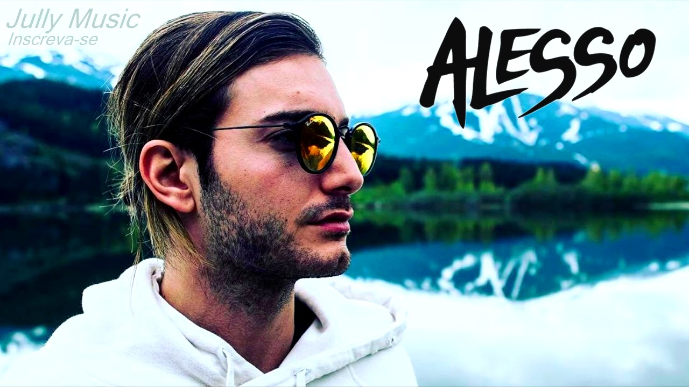

Dj Producer
Biografia
Alesso, pseudonimo di Alessandro Renato Rodolfo Lindblad (Stoccolma, 7 luglio 1991), è un disc jockey, produttore discografico e remixer svedese, di origine italiana. Figlio di padre svedese e madre italiana (originaria di Spinazzola,erede della famiglia De Stefano, è stato scoperto da Sebastian Ingrosso, disc jockey svedese (anch'egli di origine italiana). Dopo i discreti riscontri sul pubblico con i brani Nillionaire e Dynamite nel corso del 2011, a renderlo conosciuto al grande pubblico è il remix di Pressure, brano della cantante Nadia Ali, eletta come "miglior traccia progressive" all'Annual International Dance Music Award del 2011. Il 31 agosto dello stesso anno pubblica il suo nuovo brano Calling, in collaborazione con Sebastian Ingrosso, che risulta la quarta canzone più scaricata da Beatport nel 2011. Il 16 novembre viene pubblicato il suo nuovo brano "Raise Your Head" su etichetta Refune Music, mentre il 21 novembre esce ufficialmente il remix di Titanium, brano di David Guetta cantato da Sia. Nel 2011 fa il suo debutto nella classifica dei Top 100 Djs della nota rivista Dj Magazine al 70º posto.
Discografia
Il 7 aprile 2015, a circa otto mesi dall'annuncio pubblicato sui social network, Alesso decide la data definitiva di pubblicazione del suo primo album, intitolato Forever. L'album sarà disponibile su iTunes e sugli altri digital store a partire dal 25 maggio. Tra quelle presenti, numerose sono le tracce già conosciute e diventate famose al grande pubblico: tra queste vi sono successi come "Under Control" in collaborazione con Calvin Harris e gli Hurts, il remix ufficiale di "If I Lose Myself" degli OneRepublic, "Heroes", "Cool" e "Tear the Roof Up". Tra le altre tracce vi sono alcune collaborazioni con cantanti affermati e non: "In My Blood" insieme a John Martin, già autore di collaborazioni importanti insieme agli Swedish House Mafia, "Scar" con Ryan Tedder, voce degli OneRepublic, e "Sweet Escape" con Sirena.
Curiosità

In un'intervista a Radio Deejay, Alesso ha dichiarato di saper parlare italiano abbastanza bene, anche se non perfettamente, e di essere stato più volte in Italia nella sua casa vacanze a Brindisi. Il 21 maggio 2015 è stato rilasciato su Steam un contenuto scaricabile per il videogame Payday 2 ambientato in un concerto di Alesso. Ha fatto un cameo in We Are Your Friends, film del 2015.